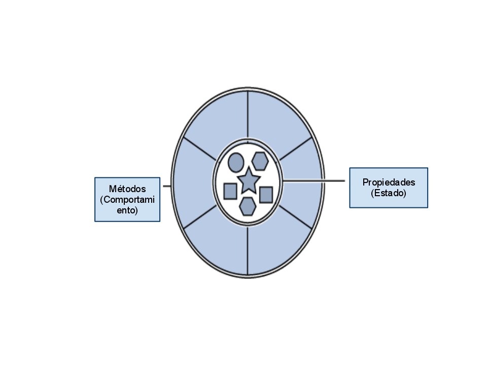

| space, → | next slide |
| ← | previous slide |
| d | debug mode |
| ## <ret> | go to slide # |
| c | table of contents (vi) |
| f | toggle footer |
| r | reload slides |
| z | toggle help (this) |
int sumaDigitos(String cadena)public static int sumInts(String cadena){
int res = 0;
for(char letra : cadena.toCharArray())
if(Character.isDigit(letra))
res += Integer.parseInt(
Character.toString(letra));
return res;
}int, String, char, Character e Integer?int y char son primitivos)cadena, res y letra?s.toCharArray()=> "s, sos un String, ustedes saben
convertirse en arreglos de chars, ¡hacelo!"Character.isDigit(c): los primitivos son mudos
y necesitan wrappers (digámosles Chaperones).toCharArray o isDigit?
//tienen que estar "sincronizados"
int[] edades = ;
String[] nombres;
int acum, karls;
for(int edad: edades)
acum += edad;
System.out.println(acum/edades.length);
for(int i=0;i<edades.length;i++)
if (edades[i] > 21
&& nombres[i].equals("Karl"))
karls++;
System.out.println(karls);Persona[] personas;
int acum, karls;
for(Persona p: personas){
acum += p.edad;
if(p.esMayorDeEdad() && p.seLlama("Karl"))
karls++;
}
System.out.println("...");class NOMBRE_DE_CLASE{
//PROPIEDADES
//MÉTODOS
}public class Persona{
String nombre;
int edad;
public boolean esMayorDeEdad(){
return this.edad >= 21;
}
public boolean seLlama(String n){
return this.nombre.equals(n);
}
}String s = "hola"
String s = new String(new char[]{'h','o','l','a'});
String p = new Persona("Karl", 60);public class Persona{
//Propiedades...
public Persona(String n, int e){
this.nombre = n;
this.edad = e;
}
//Métodos...
}this se refiere a la instancia actualtoStringequalsstatic, decís: todas las instancias
van a compartir esto, y no tendrán su propia copiaclass Persona{
int personasCreadas;
int edad;
public Persona(){
System.out.println("Personas: "+personasCreadas);
}
}
//...
class Main{
public static void main(String[] args){
Persona a,b,c;
a = new Persona(); //Personas: 1
b = new Persona(); //Personas: 1
c = new Persona(); //Personas: 1
}
}class Persona{
static int personasCreadas;
int edad;
public Persona(){
System.out.println("Personas: "+personasCreadas);
}
}
//...
class Main{
public static void main(String[] args){
Persona a,b,c;
a = new Persona(); //Personas: 1
b = new Persona(); //Personas: 2
c = new Persona(); //Personas: 3
}
}a==b se pregunta si están el mismo lugar